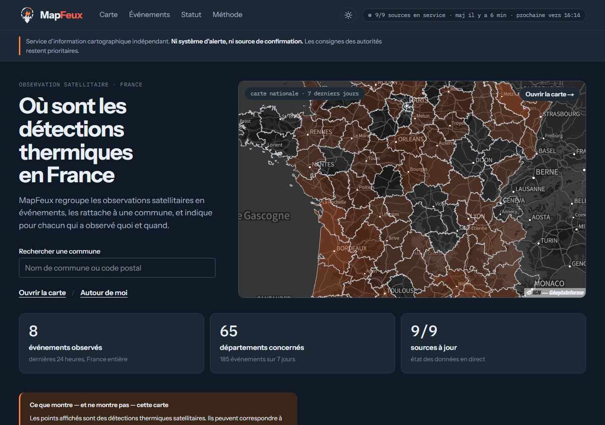
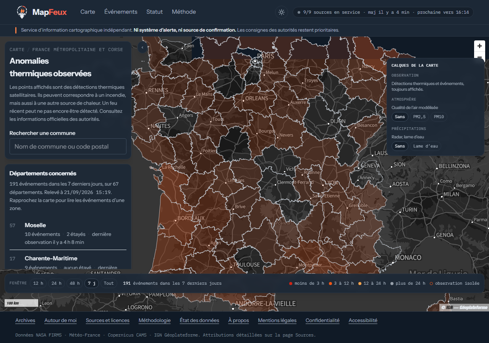
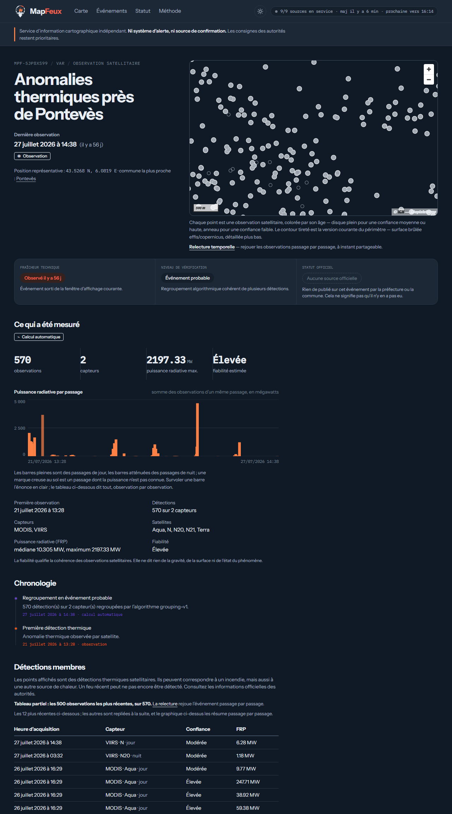
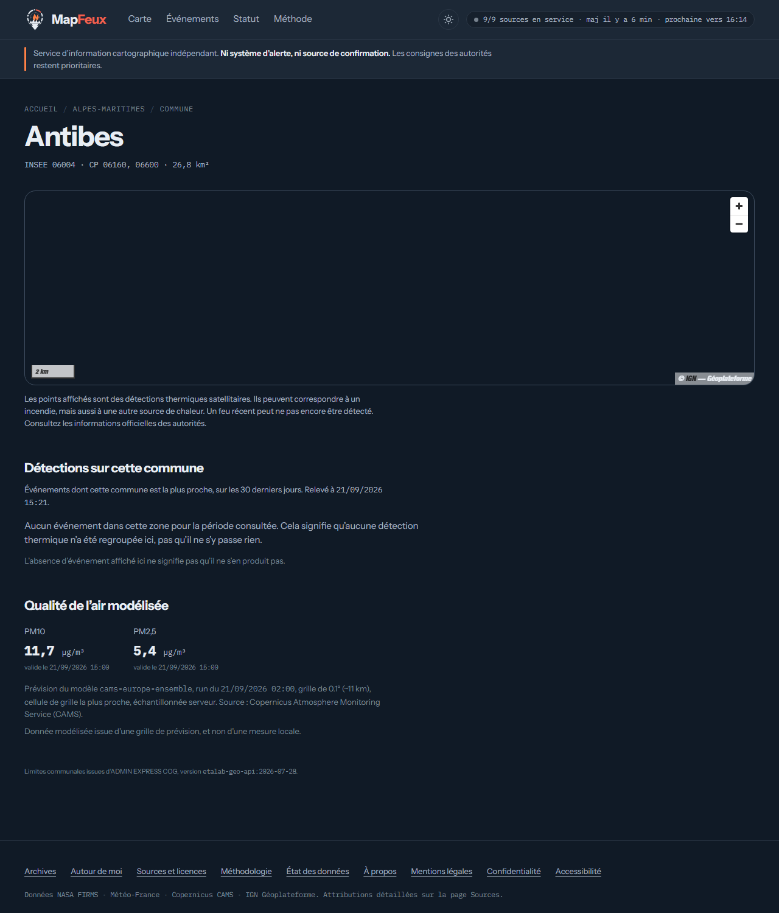
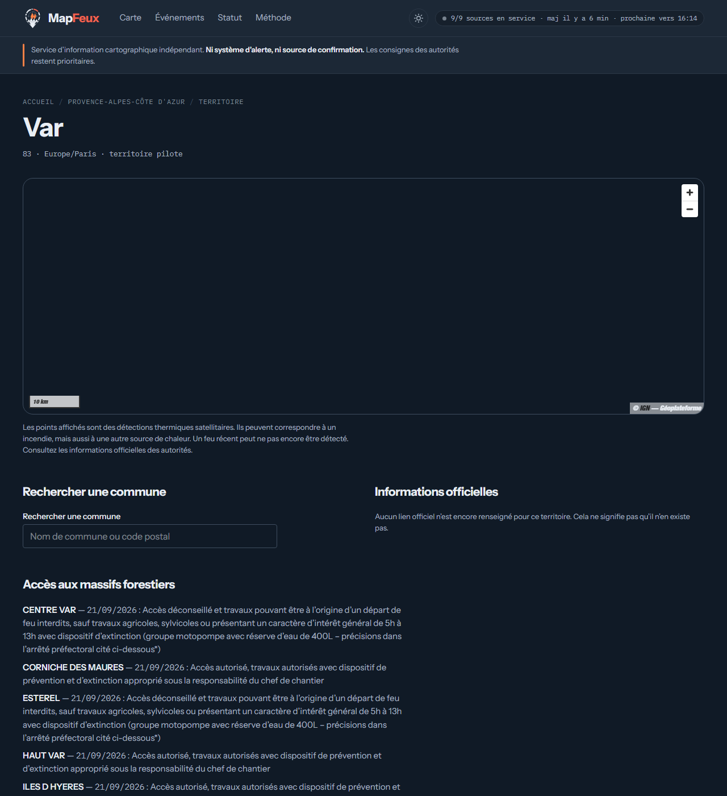
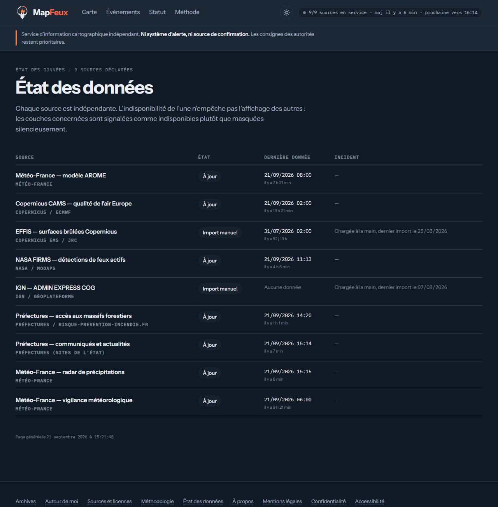
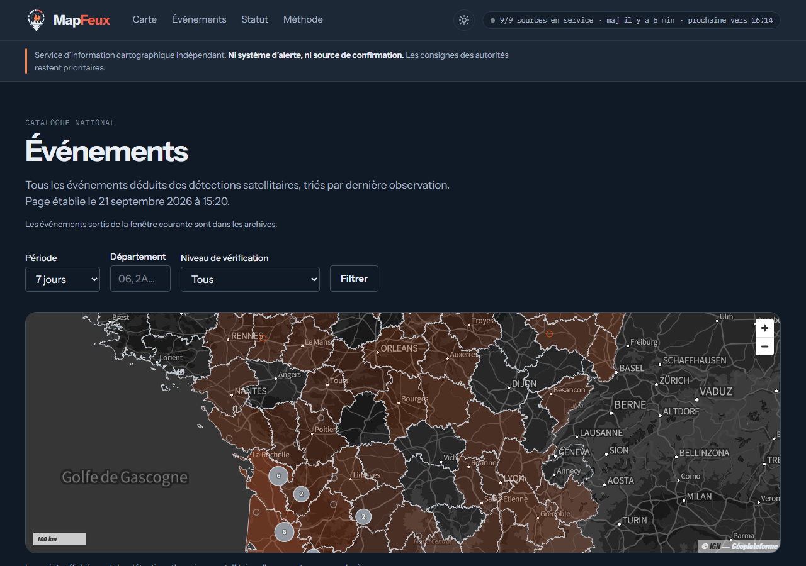

Une page de référence par événement : permanente, sourcée, horodatée, et lisible même quand le reste tombe. France métropolitaine et Corse.

1 · en bref
Les détections thermiques satellitaires sont publiques et gratuites depuis des années, mais diffusées sous une forme difficile à lire : des points sur une carte mondiale, sans commune, sans heure locale, sans explication de ce qu'un point signifie.
MapFeux ne produit aucune donnée nouvelle. Il rend lisible ce qui existe déjà, à la maille communale, en français, en indiquant systématiquement qui a observé quoi et quand. Chaque événement a une page permanente : ses observations, sa chronologie, sa fiabilité, et les informations officielles qui le concernent quand elles existent.
À qui veut savoir, pour une commune ou un département, ce que les satellites ont observé et depuis quand : habitants, élus, journalistes, services qui souhaitent une vue indépendante et datée. Lisible sans JavaScript, sur un téléphone, et pendant une crise, quand la charge monte.
Pas un système d'alerte : il ne prévient personne, ne déclenche rien et ne remplace aucun canal officiel.
Pas une source de confirmation : une détection thermique n'est pas un incendie confirmé, et l'absence de détection n'est pas l'absence de feu.
Pas un outil opérationnel : aucune donnée de moyens, de personnels ou d'intervention n'y figure, et aucune n'y figurera.
Rattaché à aucune administration : ni service d'incendie et de secours, ni préfecture. Chaque page le dit dans un bandeau permanent.
2 · ce que voit un visiteur
À l'échelle de la France, la carte ne montre pas des points : elle montre les départements concernés sur la fenêtre choisie, sept jours par défaut, avec un lavis dont l'intensité suit le nombre d'événements, et une liste qui les nomme. Rapprocher la carte fait apparaître les événements d'une zone, colorés par l'âge de leur dernière observation — moins de trois heures, trois à douze, douze à vingt-quatre, davantage — et la liste suit la carte : elle dit exactement ce que l'emprise affichée contient.

L'âge de la dernière observation, jamais la gravité. Un disque plein est un événement étayé, observé plusieurs fois ou par plusieurs capteurs ; un anneau est une observation isolée, conservée et consultable, mais dont on ne peut presque rien dire.
Le nombre d'observations satellitaires, et non la surface ou l'intensité du phénomène, que MapFeux ne connaît pas. La légende le répète sous la carte, en toutes lettres.
2 · ce que voit un visiteur
C'est l'objet central du service. Une adresse permanente par événement, rendue par le serveur et lisible sans JavaScript. Elle s'ouvre sur l'empreinte des observations, puis dit trois choses que l'on pourrait croire redondantes et qui répondent à trois questions différentes : quand remonte la dernière observation (fraîcheur technique), ce que l'on sait de l'existence de l'événement (niveau de vérification), et ce qu'une autorité en a publié (statut officiel) — ce dernier n'apparaît que sourcé et daté, jamais déduit.

Qu'un incendie est en cours, qu'il est éteint, où sont les moyens, quelle surface a brûlé. Sous chaque chiffre calculé, la mention qu'il s'agit d'une déduction ; sous chaque observation, celle qu'un point est le centre approximatif d'un pixel, non le foyer exact.
2 · ce que voit un visiteur



3 · ce que le service affirme, et ce qu'il ne dit pas
Une carte de feux prise pour une source officielle produit exactement la confusion qu'elle prétendait dissiper. Les règles ci-dessous ne sont pas des intentions : elles sont écrites dans la base de données et dans les pages, et testées.
Une anomalie thermique peut être un feu de végétation, mais aussi une torchère industrielle, un four, un brûlage agricole ou un reflet du soleil sur une surface métallique. MapFeux affiche l'observation, pas son interprétation. Les sources thermiques récurrentes connues — sites industriels, torchères — sont classées dès l'import : sur quatorze années d'archives, près d'une détection sur deux en France n'est pas de la végétation.
Les satellites passent quelques fois par jour et ne surveillent pas ; les nuages masquent le sol ; un pixel couvre 375 mètres ou un kilomètre. Chaque page qui pourrait être lue comme « rien à signaler » porte la phrase qui l'interdit : une liste vide dit qu'une détection récente peut ne pas encore être importée, et renvoie à l'état des données.
La fraîcheur technique dit quand remonte la dernière observation. Le niveau de vérification dit ce que l'on sait de l'existence de l'événement. Le statut officiel — fixé, maîtrisé, éteint — n'apparaît que publié par une autorité, avec sa source et sa date : aucun traitement automatique ne peut le renseigner, et cette règle est appliquée dans la base de données elle-même, pas seulement dans l'interface.
Quand la base ne répond pas, le site ne montre pas zéro événement : il dit qu'il n'a pas pu lire, avec l'heure, et l'API répond « indisponible » plutôt qu'une liste vide. Un audit externe du 15 septembre 2026 avait relevé ce risque ; il a été traité le soir même, sur les événements comme sur les communes et les territoires, et vérifié sur une panne simulée.
Le service couvre la France métropolitaine et la Corse. Les détections voisines — Espagne, Belgique, Italie, mer — sont importées, jamais publiées : un déclencheur en base masque tout événement hors périmètre, quel que soit le chemin qui l'écrit, et une adresse qui y mènerait explique pourquoi elle ne montre rien.
4 · d'où viennent les données
Chaque source est déclarée dans un registre que le site lit pour afficher son état, sa licence et son attribution — rien n'est recopié à la main. Les données brutes reçues sont archivées avant toute analyse et ne sont jamais modifiées ; ce qui est affiché en dérive par des traitements décrits sur la page Méthodologie.
| Source | Fournisseur | Ce qu'elle apporte | Lecture | Licence |
|---|---|---|---|---|
| NASA FIRMS | NASA / MODAPS | Détections de feux actifs, capteurs VIIRS et MODIS — la matière première des événements | toutes les 10 minutes | données NASA, libres |
| Radar de précipitations | Météo-France | Lame d'eau, animée sur la carte — calque éteint par défaut | toutes les 5 minutes | Licence Ouverte / Etalab |
| Communiqués et actualités | Préfectures (sites de l'État) | Publications mentionnant une commune, citées et datées, jamais reformulées | toutes les 15 minutes | Licence Ouverte / Etalab |
| Vigilance météorologique | Météo-France | Bulletins de vigilance, par département | toutes les heures | Licence Ouverte Etalab v2 |
| Accès aux massifs forestiers | Préfectures / risque-prevention-incendie.fr | Niveaux d'accès du jour et du lendemain, verbatim | toutes les 3 heures | Licence Ouverte / Etalab |
| Copernicus CAMS | Copernicus / ECMWF | Qualité de l'air modélisée (PM2,5, PM10), calque à la demande | quotidienne | Copernicus, libre avec attribution |
| Modèle AROME | Météo-France | Champs météorologiques archivés pour l'indice feu de forêt | quotidienne | Licence Ouverte / Etalab |
| ADMIN EXPRESS COG | IGN / Géoplateforme | Limites communales et départementales — pour nommer un lieu, jamais pour affirmer qu'une commune est menacée | import annuel, manuel | Licence Ouverte / Etalab |
| EFFIS | Copernicus / JRC | Surfaces brûlées, chargées lors d'un grand feu | import manuel | Copernicus, libre avec attribution |
Le fond de carte est celui de la Géoplateforme de l'IGN, attribué en permanence. Les cadences sont celles déclarées au registre et mesurées sur les journaux d'import ; l'état du moment est sur la page État des données.
NASA FIRMS fournit des anomalies thermiques, pas des incendies confirmés, généralement dans les trois heures suivant le passage du satellite. Météo-France et Copernicus CAMS fournissent des sorties de modèles à l'échelle de plusieurs kilomètres : une valeur de modèle n'est pas une mesure prise à l'endroit consulté, et chaque page qui en affiche une le dit. Les préfectures sont citées, jamais interprétées.
5 · comment un point devient un événement
Chaque observation FIRMS est un pixel dont la température de surface est nettement supérieure à son environnement. Il est importé tel quel, avec son capteur, son satellite, son heure d'acquisition en UTC, sa confiance fournisseur et sa puissance radiative. La donnée brute est conservée ; elle n'est jamais corrigée.
Un même passage d'un satellite au-dessus d'un feu produit plusieurs pixels, à la même minute. Regroupés par passage, ils donnent une suite d'instants : « le satellite est passé sept fois ». La puissance d'un passage est la somme des puissances connues — une déduction, présentée comme telle.
Les détections proches dans l'espace et dans le temps sont regroupées en un événement probable. La tolérance spatiale s'élargit avec le temps écoulé, parce qu'un feu s'étend, mais elle est plafonnée pour ne pas fondre deux foyers d'une même vallée. Ce regroupement est une inférence : il peut réunir deux feux voisins ou en séparer un. L'algorithme est déterministe et sa version est enregistrée avec chaque rattachement, si bien qu'un regroupement ancien reste explicable après un changement de réglage.
Les sites qui brûlent toute l'année — torchères, aciéries, cimenteries — sont recensés dans un registre spatial. Une détection qui y tombe est classée dès l'import et ne forme pas d'événement de feu. Le registre a été constitué sur quatorze saisons d'archives FIRMS, plus de 330 000 détections.
Un événement est nouveau, puis récent, puis ancien, puis archivé après sept jours sans observation. Ces états dérivent du temps qui passe, pas des imports, et sont recalculés à chaque passe. Archivé n'est pas éteint : c'est sorti de la fenêtre d'affichage, et toujours consultable.
Faible, modérée ou élevée : elle agrège la confiance du fournisseur, la répétition des observations, la présence de plusieurs capteurs et la persistance dans le temps. Une fiabilité élevée signifie « l'observation est solide », jamais « le feu est important ».
Un événement dont le point représentatif est hors de France métropolitaine et de Corse — ou à plus de 0,05 degré d'un département, le littoral — est masqué en base. Ses détections restent archivées ; rien n'est détruit, et la décision est réversible.
6 · fiabilité et transparence
Aucune page ne peut afficher une donnée sans annoncer son âge. Le bandeau de chaque page dit combien de sources répondent, de quand date la dernière mise à jour et quand la prochaine est attendue. Une fiche servie depuis un instantané le dit, avec l'heure de l'instantané.
Une base qui ne répond pas n'est ni un 404 ni un zéro : c'est un bandeau daté, sur la page, et une réponse « indisponible » sur l'API, jamais mise en cache. Une veille extérieure lit l'état public toutes les heures et écrit à l'éditeur quand une source automatique dépasse l'âge qu'elle promet, ou quand le site ne répond pas.
La donnée brute est immuable et archivée avant analyse. Toute retouche éditoriale à venir — masquer, rapprocher, corriger — sera journalisée avec son état antérieur et son motif : une correction n'efface jamais ce qu'elle corrige.
Le dépôt porte 231 tests sur le site et ses vocabulaires, 467 sur la chaîne d'ingestion. À chaque modification, une base vierge est reconstruite, ses 53 migrations rejouées dans l'ordre, et une passe complète d'ingestion exécutée sous le rôle restreint qui tourne en production — vingt tables, rien de plus.
Un audit externe du code, mené le 15 septembre 2026 sur une archive du dépôt, a formulé cinq constats prioritaires. Quatre ont été traités dans les deux jours, chacun vérifié par reproduction et consigné dans le plan de développement, public dans le dépôt. Le cinquième — l'authentification à deux facteurs de l'administration — est planifié avant toute fonction sensible, et aucune fonction sensible n'est ouverte.
Un site rendu par le serveur, une base de données géographique, une chaîne d'ingestion en Python, un dépôt de code ouvert avec ses décisions d'architecture documentées. Pas de données personnelles : la position d'un visiteur qui cherche « autour de moi » n'est ni journalisée ni conservée.

7 · où en est le projet
Le service tourne sur données réelles depuis le 5 août 2026, en France métropolitaine et Corse. Ce qu'un visiteur voit dit vrai : la France et ses départements, les événements de France seulement, l'état de chaque source.
8 · conditions d'usage et contact
Les données brutes appartiennent à leurs producteurs — NASA, Météo-France, Copernicus, IGN, préfectures — et restent soumises à leurs licences respectives, toutes ouvertes. Qui republie une information issue de MapFeux reprend l'attribution du producteur, telle qu'elle figure sur la page Sources et licences, et non celle du service.
Chaque événement a un identifiant public stable, de la forme MPF-XXXXXXXX, et une adresse permanente. Un identifiant fusionné redirige définitivement vers l'événement canonique ; une adresse partagée ne se périme pas.
Les mêmes données sont servies par une API publique en lecture, sans clé, avec pour chaque réponse l'heure de génération et l'état des sources mobilisées. Un état reconstitué à un instant donné, une liste d'observations, un catalogue filtrable : ce que le site montre, l'API le dit dans les mêmes termes.
| Le site | mapfeux.vercel.app |
| La méthode et les limites | mapfeux.vercel.app/methodologie |
| L'état des données, en direct | mapfeux.vercel.app/statut |
Document établi le 21 septembre 2026 depuis le service en ligne et son dépôt de code. Les captures d'écran sont celles du site à cette date ; les chiffres cités — 191 événements sur sept jours, 67 départements — sont ceux lus en base ce jour-là et changent à chaque import. Fond de carte IGN — Géoplateforme. Données NASA FIRMS, Météo-France, Copernicus, IGN, préfectures.